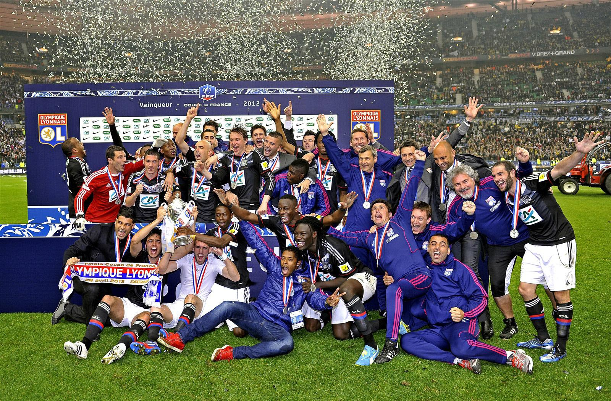
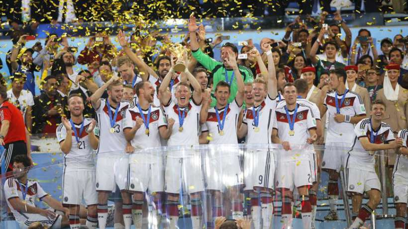
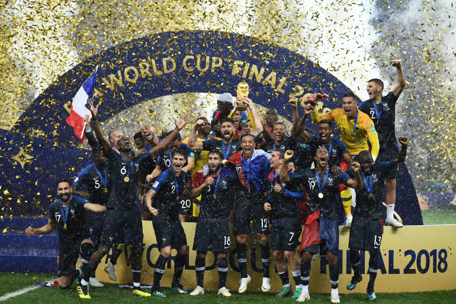
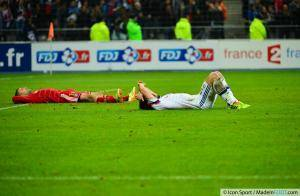
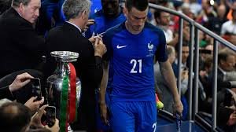
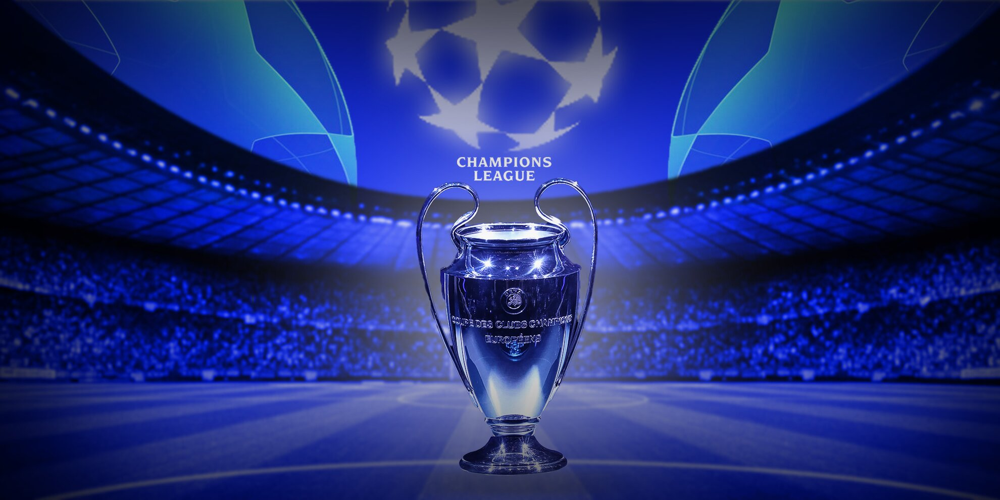
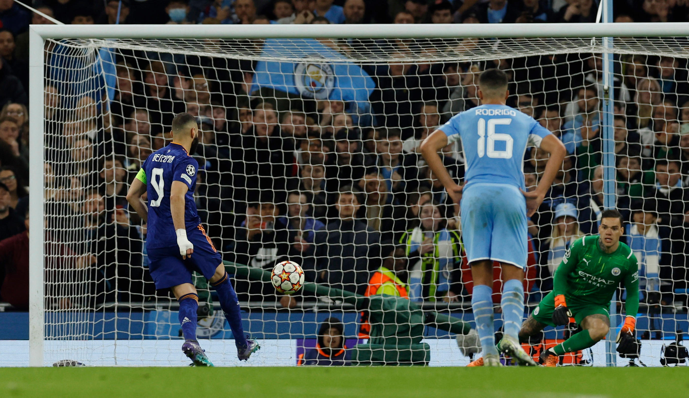
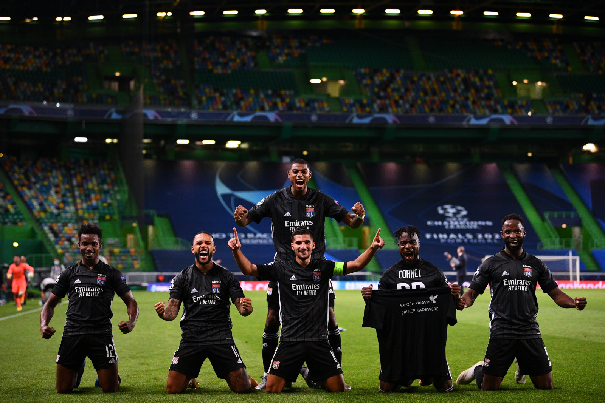
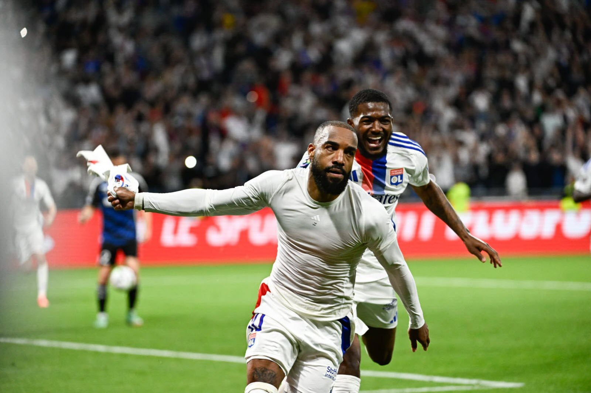

Date de publication: 20 mai 2024
Introduction au football
J'aime le foot depuis que je suis tout petit. Mon papa m'a mis très rapidement un ballon dans les pieds dès que j'ai su marcher.
Et depuis petit, mon père m'a fait regarder tous les matchs qui pouvaient passer à la télé. Et notamment ceux de l'équipe de France et de l'Olympique Lyonnais. Mon père m'a également très vite emmené au stade pour voir des matchs.
Le début des grandes joies et des grandes déceptions
Les grandes joies
- Ma première grande joie fut la victoire de l'OL en Coupe de France en 2012. J'ai peu de souvenirs puisque je n'avais seulement 4 ans, mais je me souviens de mon père qui le célébrait à la maison. 
- Ma deuxième grande joie fut la victoire de l'Allemagne à la Coupe du Monde 2014. Malgré ma déception de l'élimination de la France en quart de finale (par l'Allemagne justement), j'ai su me réconforter en supportant la Mannschaft (surnom de l'équipe allemande), car je suis originaire de ce pays du côté de ma mère. Nous avions regardé la finale dans une salle commune dans un bateau qui revenait de Corse, la joie fut double puisque nous étions les seuls à supporter l'Allemagne avec ma soeur. 
- Et enfin, ma troisième grande joie de mon enfance fut la victoire en Coupe du Monde de la France en 2018. J'ai pu la célébrer en Corse, toute ma famille était heureuse, c'était la fête dans tout le pays. Bref, que de bons souvenirs en se remémorant cette Coupe du Monde légendaire. Je regardais les matchs avec mon père et ma soeur nous criions dans l'appart à côté de ma mère qui rigolait un peu de nous. On sautait sur le canapé à chaque but, surtout sur le but de Benjamin Pavard contre l'Argentine en quart de finale. 
Les grandes déceptions
- Ma première grande déception fut la défaite de l'OL en finale de Coupe de la Ligue contre le PSG en 2014. Menés 2-0, l'OL a su remonter grâce à un superbe but de Lacazette, mais ça n'a pas suffi à l'OL pour s'imposer. J'étais très triste, et ce fut la première fois que mon père m'a consolé pour du football. 
- Ma seconde grande déception fut la défaite de l'équipe de France en finale de l'Euro. 
Mon approche du football depuis mon adolescence
À quelle fréquence je regarde du football et depuis quand ?
J'ai commencé à regarder le football assidûment depuis mes 10 ans (c'est-à-dire depuis que j'ai accès aux matchs sur des chaînes payantes). Je regarde donc tous les weekends les matchs de l'OL quand je ne peux pas aller au stade. Et j'essaie d'aller assez fréquemment au stade.
Je regarde également les grandes compétitions européennes, que ce soit en club ou en équipes nationales. Je regarde presque tous les matchs de Ligue des Champions, et les matchs de phases à éliminations directes de l'Europa League. Je regarde également la Coupe d'Afrique des Nations, ainsi que la Copa América (l'équivalent de l'Euro pour l'Amérique). 
Mon second club de cœur est le Real Madrid, suite au transfert du joueur de l'OL Karim Benzema au Real Madrid (un de mes joueurs préférés). Depuis, je regarde assidûment les matchs de Madrid dans le championnat espagnol, mais également en Ligue des Champions. 
Mes meilleurs souvenirs du football pendant mon adolescence
Mes meilleurs souvenirs du football récemment sont premièrement l'épopée de l'OL en Ligue des Champions durant la saison 2019/2020. L'Olympique Lyonnais, en étant 7ème de Ligue 1, a réussi à se qualifier en battant en huitième de finales la Juventus de Turin (premier du championnat italien) et en battant Manchester City (premier club de Ligue anglaise). Je me souviens particulièrement des matchs contre Manchester City, où nous sommes passés de la presque égalisation de City, à faire le break en l'espace de deux minutes. Malheureusement, nous n'avons pas réussi à tenir tête à une des meilleures équipes de la compétition (le Bayern de Munich). 
Et mon second meilleur souvenir est cette saison de l'OL. En effet, au bout de la 15ème journée de championnat, nous étions derniers de Ligue 1, et donc relégables en Ligue 2. Les chances de maintien en Ligue 1 selon des études statistiques étaient de 0% à ce moment-là. Cependant, à la mi-décembre, après avoir changé de coach 3 fois dans la saison, l'OL fait appel à un intérimaire qui travaille au club et qui s'occupe des jeunes. Depuis ce jour-là, l'OL enchaîne victoire sur victoire. J'ai pu assister au stade à des matchs fous et pleins de rebondissements. Et finalement, au cours de la dernière journée, Alexandre Lacazette inscrit à la 90+6ème minute le but de la victoire, nous qualifiant ainsi en Europa League et nous permettant de décrocher la 6ème place du championnat, contre toute attente. 
Pour finir, à l'heure où j'écris ce texte, l'OL doit jouer dans 4 jours la finale de la Coupe de France contre le PSG. J'espère que ce match s'inscrira dans mes meilleurs souvenirs du football.